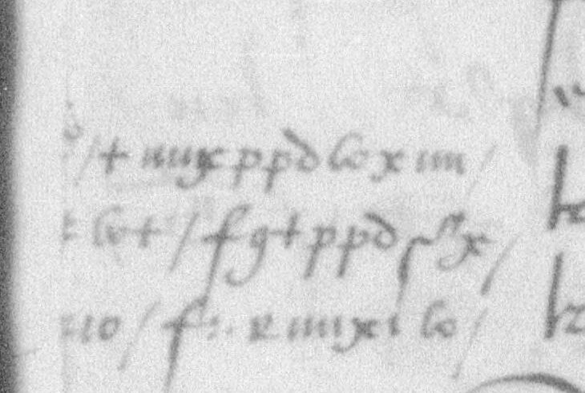
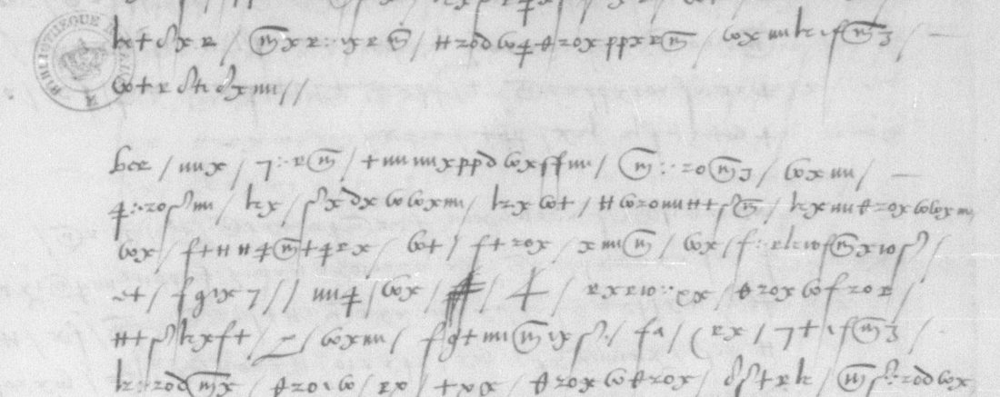

01 The document
Français 3157 is a volume of letters and papers of Anne de Montmorency and his family, 1559–1562. Item 67 is five leaves, ff. 152r–156v (Gallica views 153–158). The dorse carries a later endorsement “henry second” and one line in the same signs. It stands between letters of Honorat de Savoie, comte de Villars, from Languedoc, which are in clear and carry no key. Item 68, which begins at f. 158, is Marillac’s clear despatch from England, which is why the notice seems to put the mémoire there.
The mémoire has no address, greeting or signature. It speaks to “vostre grandeur”, pairs the king and “vostre grandeur” throughout, and ends with enclosures for the recipient to read. That fits the connétable, whose papers these are, back at court after the death of François II on 5 December.
Two small additions were deciphered in a parallel pass on this target, and both check against the key. A marginal note at f. 153r, line 14, belongs after “le juge mage et aultres magistrats du siege presidal d’Agen”: +mmxppdWxm Wx+ fg+ppdS3x io f:xrmx:W, “assemblez en la chambre du conseil”. The one cipher word on the dorse is “Advertissemens”.

02 The cipher
The signs are drawn like a cursive hand, and a stroke divides the words. It is a homophonic substitution with some compound signs:
- Homophones. e is x or ff; n is r, a smaller, rounder form of x that is easy to confuse with it; s is m, n, nn or 3; r is s, S or s3; i is i, ‡, y or e; u/v is zo, io or δ.
- Two-stroke units, one letter each. zo u, pp m, io u, s3 r, ff e, nn s, lz d, :. o.
- Polyphonic signs. δ is u/v, b and g (“gouvernement”, “bien”, “langaiges”); ‡ is i and sometimes a.
- Four word codes. Z pour (also the syllable, “y pourvoient”), 4 roy, c+, i+ and e+ et, F and g sieur. Every name and place is spelt out.
The key is in memoire1560/key.txt, and decrypt.py applies it line by line.

03 The decipherment
The text below keeps the writer’s 1560 spelling. The key does not distinguish u from v or i from j; these, and a few accents, are set as the sense requires. Words in [square brackets] are emended where the mechanical decrypt differs from the evident word, whether by a slip of the writer, a doubtful sign or a polyphonic value. [..] marks a word not deciphered. The paragraphs follow the manuscript.
f. 152r Despuis les derniers advertissemens que envoia[y] a vostre grandeur, les affaires de pardeça [on]t [couru] de mal en pis, continuant les presches et assemblees plus que jamais; et [aux] villes ou souloit avoir ung predicant, il en y a a present deux; ausquels presches il y [a] deux notables femmes qui y assistent ordinairement avecques grand suyte, qui sont madame de Castelpers et madamoiselle de Boesse, femme du cappitaine Montseignac. Vrai est que les rebelles, ayant entendu que le roy envoyoit pardeça le sieur de Termes avecques quelques compaignies, [on]t practiqué quelques seigneurs [..] le escripre a sa majesté et luy [faire] entendre que [veu] chacun de pardeça vit soubz l'obeissance du roy, [ce] [qui] pourr[oit] avoir faict ce [qu'a] rapporté, tant pour [ung] pro[f]it particulier qu'ils se pourroient estre ressentis que pour estre de la ligue desdicts rebelles. A quoi ne fault que le roy et vostre [g]randeur s'arreste aulcunement, car ne font cella que pour se [..] [..] augmenter leurs trouppes et gaigner temps pour avoir secours de quelques estrangiers qu'ils disent se tenir asseures.
f. 152v [Il] est a present facil les chastier, et pour l'advenir je ne sc[ai] qu'il pourr[a] estre, pour les grandes factions et menees [qui] se y [trouvent], avecques beaucoup de qualite de personnes. [..] que soit vray, puis peu de jours [il] s'est faict une assemblee en la ville de Clairac, en Agenois, d'environ deux mil rebelles, [ou] fust arresté et conclut que si le roy envoyoit forces de pardeça, qu'ils se mect[r]oient en deffence, disans qu'ils aiment mieulx mourir les armes en main que si le roy les faisoit executer par ung bourreau. Leurs trouppes et sectes augmentent touts les jours. Vostre grandeur ne pourroit croire le nombre de grands seigneurs et noblesse [qui] sont intelligence avecques ceste canaille; vrai est qu'ils ne se declairent poinct, mais [qu'ils] y donnent toute la faveur et conseil qu'ils peuvent. Le frere du seigneur de Caulmont est sieur abbé dudict Clairac. Lesdicts de Caulmont [ont] seigneurie, place et chasteau [..] [..] n'ayent de ministres, et qu'il ne s'y face assemblee de rebelles, dequoi ai cydevant adverti vostre grandeur. Le juge des terres dudict seigneur de Caulmont, nommé Reclus, est parti pour
f. 153r aller en court, lequel par les moien[s] desdicts de Caulmont et par la faveur du chief [a] esté esleu, pour les raisons [que] cydevant [ay] escript[es] [a] vostre grandeur, pour aller [de] les remonstrances des doleances pour le tiers estat du pais d'Agenois, avecques ung syndic du pais d'Agenois nommé Boissonade, lesquels sont a present pardela, [qui] pallieront et dissimuleront la verite de toutes les choses [qui] sont passees pardeça; car fust arresté par le juge mage et aultres magistrats du siege presidal d'Agen qu'il n'estoit besoing que lesdicts deleg[ué] et syndic remonstrassent la totalle verité des choses, pour [n']irriter le roy et eviter que sa majesté [ne] executast sa rigueur sur ledict pais d'Agenois. Si vostre grandeur trouvoit bon de ouir particulierement lesdicts syndic et delegué, [entendres] par leur bouche de grandes choses qu'ont [discouru] audict pais d'Agenois. Ledict juge [mage] est parti pour s'en aller [par]dela expressement pour solliciter lesdicts syndic et delegué pour leur [de] taiser la verite des choses [discourues] audict pais d'Agenois. Vostre grandeur advisera s'il sera bon de le surprendre sur le faict pendent qu'il sera pardela, [et] luy [..] rendre raison du devoir qu'il a faict en sa province. Vostre
f. 153v grandeur a beaucoup de memoires contre luy contenant les abus et malversations commises en son estat de chief de province. Ledict Reclus, delegué a la judicature pour lesdicts seigneurs de Caulmont de la ville de Thonens, Caulmont et aultres lieux et places qu'ils [tiennent], toutes lesquelles y a ordinairement ministres predicans, au presche desquels il a assisté et, luy present, s'y est faict assemblee de rebelles. S'il est oui sur lesdicts faicts, je ne scai quelle raison il pourra rendre du devoir de justice qu'il y a faict. Monsieur de Biron, puis ung mo[i]s, [il] fust une assemblee d'environ cinq cens soldats, la pluspart arcabousiers, lesquels il disoit vouloir conduire, suivant le commandement du roy, en la ville de Bergerac pour gaigner le chasteau d'icelle et executer sur les habitans quelque commandement que sa majesté l'avoit chargé. Toutesfois, ayant faict ladicte assemblee, apres avoir communiqué aux principaulx habitans dudict [Bergerac], il en renvoia lesdicts soldats et s'en retourna en sa maison sans [aultre] execution, chose [qui] ne donne a presumer
f. 154r rien de bon pour les abus que s'y peuvent commectre, d'aultant qu'il y faict le semblable a Villeneufve, Montflanquin [et] aultres villes suspectes de pardeça. Je ne scai s'il a faict ces choses du mandement du roy ou vostre; je n'ai voulleu faillir [d']en donner advertissem[en]t, pour ce que despuis qu'il a eu parlamenté avecques eulx, [ils] ne se sont amendés aulcunement, ains sont pis que [jamais]. Aussi je ne scai si le roy et vostre grandeur estes advertis que ledict [sieur] de Biron est allié de Mesmi, qu'est ung des principaulx cappitaines des rebelles de pardeça. Ledict Mesmi, le cappitaine La Caze, le cappitaine Jehan de Mesmes, le cappitaine La Borde de Villeneufve, le cappitaine Chaulmont et aultres chiefs des rebelles, dont cydevant [je] ai envoié leur [noms], sont [par]deça, faisant leurs menees acoustumees, residans la pluspart du temps en la ville de Nerac; mesmes ledict Mesmi y est a present malade et se est faict conduire [dans] une lictiere puis huict jours. Si vostre grandeur trouvoit bon, cependant que le chief est pardela et qu'il se veult dire
f. 154v innocent de la co[n]spiration que le roy leur comandast de representer les susdicts [c]appitaines pour les [..] respondre [a] leur bouche, attendu mesmes [qu']ils ont resid[é] cy devant aupres de la personne dudict chief et suite de sa court en son gouvernement de Guyenne, sa residence a present en sa ville de Nerac la pluspart du temps. Si sa majesté faict ledict commandement, ce sera bien le moyen de les pouvoir recouvrer, aultrement qui sera tresque difficil, ayants recouvert[z] les susdicts cappita[ines], veu [par] le moyen de la trouppe diceulx La Caze; et mesmes le roy [s]era [a] [s]cavoir par la entierement les conspirations et entreprinses faictes contre sa majesté [et] son royaulme. Monsieur de Lioux, frere du sieur de Montluc, s'en va en court, qui est compose de mesme humeur que beaucoup d'aultres qui veullent servir le roy masques; ce [qu']il en a donné cy devant advertissement [a] ce que le roy et [vo]stre grandeur ne s'y [fient], [..] [..] entendu leurs menees et factions. Ledict de Lioux, pendent qu'il estoit pardeça, a faict de grands menasses a
f. 155r ceulx qui font service au roy, disant qu'il [n']a personne qu'aie parle contre le chief qu'avant peu de temps ne luy couste la vie, [et] de pareilles menasses et parolles usent touts ceulx de la compaignie dudict chief, mesmes ceulx [qui] l'avoient acompaigné [a] son voiaige de court, lesquels s'en sont retournes de pardeça [et] faisant leur monstre dernier en la ville d'Agen tenoient publiquement lesdicts langaiges. Qui se font assemblees touts les jours de rebelles, de la pluspart desquelles le cappitaine La Caze est le conducteur et chief. Si le roy n'envoie quelcun pardeça pour les chast[ie]r, ce se fai[ct] doubte qu'il n'y aie quelque grand trouble ou inconvenient [a] l'advenir. Lesdicts rebelles m'ont rendu en tel estat que je [n']ause sortir de ma maison si ce n'est de nuict, et font courir le bruict que monsieur de Termes et ses compaignies que l'on disoit qui venoient pardeça ont esté contramandes pour s'en retourner, chose qu'a donné ung grand plaisir [et] contentament ausdicts rebelles [..] [..] pour continuer leurs factions.
f. 155v Si [ainsi] estoit, et pensant que vostre grandeur ne le trouvast [mauvais] pour la conservation de ma vie, je me pour retirerois a la suicte de la court pour illec m'emploier en treshumble obeissance a tout ce que le roy et vostre grandeur [me] plairoit me [co]mmander, car aussi bien [estant] lesdicts rebelles l'auctorit[é] de pardeça telle qu'ils l'ont, m'ont osté touts moyens de pouvoir pourveoir [n]y aulcunement a mes affaires si ce n'est au hasard de ma vie. Lesdicts rebelles continuent et font journellement de nouvelles compositions qu'ils [..] et envoyent par tout ce pays pour [..] le menu peuple de leur bonne voye et les rendre s[ch]ismaticques, comme vostre grandeur pourr[a] veoir [par] ung double que [j']en envoie, qu'ils intitulent l'edict faict par Dieu le pere, combien que croi qu'il s'en y est [..] envoié d'ailleurs. Estant ce porteur prest a monter a cheval, ay receu une lettre escripte et signee par ung bourgeois de la ville d'Agen, homme digne de foi, sur laquele vostre grandeur peult prendre [f]-
f. 156r fondement, et s'il [vous] plaist prendre la peine de la veoir, trouverés que contient advertissemens de grand consequance, mesmes des desordres que se commectent et continuent journelement par ces rebelles de [par]deça. Il est besoing que le roy et vostre grandeur y pourvoie promptement. Le langaige que les rebelles tienent entre eulx, [ainsin] que j'ay peu descouvrir, est [qu'ils] ne taichent que a gaigner quelque peu de temps pour avoir le secours [qu'ils] se tienent asseures d'ung prince et de quelques estrangiers du costé de Geneve et cantons de Suisses, entre les mains duquel prince s'asseurent mectre deux villes fortes et de frontiere de ceste Guyenne. Il est tresnecessaire que le roy [et] vostre grandeur y pourvoie[nt] diligement, [vous] asseurant qu'il se y faict de grands menees et avec telles intelligences de tant d'endroicts que je ne scai qu'il en pourra advenir. Je n'en oserois escripre plus avant que je ne sois mieulx certioré des choses. Monsieur de Fumel, qu'est mon prochain voisin, est arrivé de la court puis peu de jours et puis sadicte venue il use
f. 156v contre moi de grands menasses, je n'ai peu scavoir les occasions. Je avois baillé [a] ung pacquet audict sieur de Fumel en s'en allant a la court pour le faire tenir a vostre grandeur, ou il y avoit advertissemens de grand consequance, ensemble une lettre que le chief m'avoit escripte. Je supplie vostre grandeur me faire advertir si avés receu ledict pacquet, advertissemens et lettre dudict chief. J'ai aussi receu presentement une lettre du garde des sceaulx du siege presidial de Cahors, laquelle [vous] envoie, et [par] icelle vostre grandeur pourra entendre les desordres que se commectent journellement par les rebelles es provinces de pardeça.
04 What it tells
The mémoire is a Catholic view of the first weeks of the Protestant rising in the Agenais, the county around Agen in Guyenne:
- Clairac. The Reformed churches of Guyenne held a synod there in November 1560. The writer reports an assembly of about two thousand that resolved to resist any royal force.
- The Caumonts. The seigneur de Caumont’s brother is abbé of Clairac, every Caumont place has its minister, and their judge Reclus has been elected, with Navarre’s favour, to carry the tiers état’s doléances to the États généraux then sitting at Orléans. The syndic Boissonade goes with him, and the juge mage of Agen has followed them to court to make sure they keep quiet.
- Biron. Armand de Gontaut-Biron raised five hundred arquebusiers to take the castle of Bergerac on the king’s order, then parleyed and sent them home. The writer notes that Biron is allied to Mesmi, one of the rebel captains.
- “Le chief” at Nérac. Antoine de Bourbon, king of Navarre and governor of Guyenne, lives at Nérac with the rebel captains around him and claims to be innocent of the conspiracy of Amboise. The writer proposes that the king order him to hand the captains over.
- Lioux. Joachim de Monluc, sieur de Lioux, brother of Blaise de Monluc, is going to court and threatens anyone who speaks against the chief.
- Foreign help and the writer’s danger. The rebels expect help from a prince, from Geneva and from the Swiss cantons, in return for two frontier towns. The writer, threatened by the rebels and by his neighbour Fumel, dares not leave his house by day. He sends a Protestant tract, “l’edict faict par Dieu le pere”, a letter from a bourgeois of Agen, and one from the garde des sceaux of the présidial of Cahors.
The writer is not Blaise de Monluc, who is named in the third person. He had received a letter from Navarre, and he lived near Fumel, in the upper Agenais.
05 Method
- Access and transcription. The ten pages were fetched at full resolution from Gallica and cut into half-width bands. Model subagents transcribed each sign into an ASCII code (
SIGNS.md). - A simple-substitution solver fails. Simulated annealing with one letter per sign, keeping the word divisions and scoring with a 16th-century French 5-gram model, gave nonsense.
- The first units. z is followed by o in 262 of 283 cases, so zo is one sign. The commonest four-sign word, Tzox (23 times in the first pass), fitted “que”, and Wx, Wxm and hx fitted le, les and de. Started from these, the solver produced “les derniers advertissemens” and “les affaires de pardeça”.
- Alignment. Decrypted words were matched to the French they had to be, and each match fixed further units: xrQxrhio = entendu (r = n, io = u), 3shDx+is3xppxrQ = ordinairement (s3 = r), nn:WW:iQ = souloit (nn = s), lzDm+xm = disans (lz = d). Short groups standing alone were identified from context as word codes.
- Correction against the images. With the key in hand, every line was checked against the images, and a sign was changed only where the image supports the change. This produced about 300 x→r fixes and restored dropped signs. Where the image matches the transcription and the key does not fit, the sign was left as written and logged as a possible slip (
transcription/corrections_*.tsv).
06 What remains
- Words not deciphered. Sixteen scattered words, 0.9% of the cipher words, each once: 152r.16, 152r.26 (two), 152v.06, 152v.26 (two), 153r.31, 154v.03, 154v.24 (two), 155r.29 (two), 155v.16, 155v.17 and 155v.22. Their signs have values, but the letters do not resolve into a word from context.
- Emended words. 108 words are deciphered with a marked emendation: a sign missing or wrongly formed by the writer, or a polyphonic value chosen from context. The emendation is marked in the reading files. Uncertain names are the captain “Montseignac” and mademoiselle “de Boesse” (grade C).
- The writer. Unidentified. The text gives only a neighbour of Fumel, a correspondent of Navarre, and a man who had sent earlier reports to the connétable.
07 Sources
- Bibliothèque nationale de France, français 3157, no. 67, ff. 152r–156v: Gallica btv1b90598645, views 153–158. Notice: archivesetmanuscrits cc496207.
- No earlier decipherment or key: none on DECODE, none in Tomokiyo’s or Lasry’s (GL.htm) lists, none found by search. Lasry’s Henri II and Charles IX tables use other symbol sets.
- Background: Serge Brunet, “Clairac et le début des guerres de Religion (1560–1562)”, in Clairac et la Réforme (2019), not consulted.
Transcription, key, solver, correction logs and reading: memoire1560/.